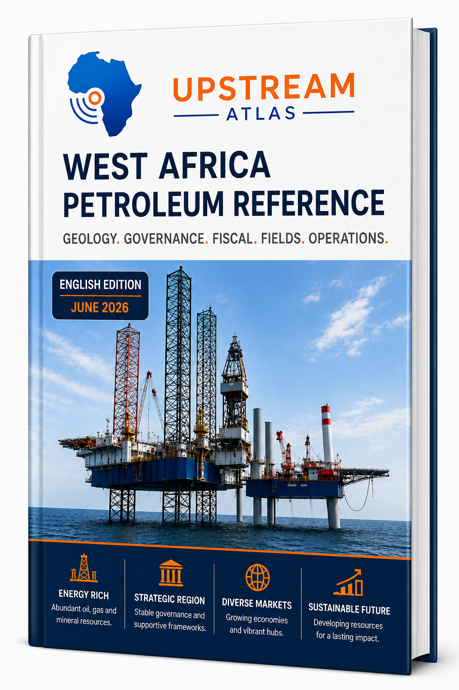

Producing
Nigeria
OilGasCondensate
- 140
- Producing Fields
- 620
- Discoveries
Independent reference material covering petroleum systems, fiscal regimes, governance frameworks, national oil companies, upstream operations, and country-specific petroleum sectors across West Africa.
Upstream Atlas is designed as a long-term reference resource for stakeholders across the petroleum value chain.
Nigeria
OilGasCondensate
Ghana
OilGasCondensate
Cote d'Ivoire
OilGasCondensate
Senegal
OilGasCondensate
Mauritania
GasCondensateOil
Niger
Oil
Benin
Oil
Liberia
No Hydrocarbons Produced
Sierra Leone
No Hydrocarbons Produced
Guinea
No Hydrocarbons Produced
Guinea-Bissau
No Hydrocarbons Produced
The Gambia
No Hydrocarbons Produced
Togo
No Hydrocarbons Produced
Burkina Faso
No Hydrocarbons Produced
Mali
No Hydrocarbons Produced
Cabo Verde
No Hydrocarbons Produced
West African Petroleum Provinces
Explore the political landscape of West Africa and jump from geography into the current country analysis surface.
Explore the MapSearch Upstream Atlas
Browse by Topic
Regional context
Frontier geology, basin context, and the regional exploration picture across West Africa.
ExploreCountry intelligence
In-depth country-by-country petroleum sector reviews and regional comparisons.
ExploreState participation
State-owned company structures, governance roles, and commercial performance models.
ExploreSystems view
From exploration through development, production, and abandonment across the value chain.
ExploreOperations
Drilling, completions, production, facilities, and operational excellence in the upstream.
ExploreCommercial terms
Royalties, cost oil, taxation, and production-sharing mechanics in petroleum agreements.
ExploreRegional comparison
Comparative fiscal design across West African producers and emerging jurisdictions.
ExploreGovernance
Institutions, licensing systems, policy choices, and regulatory capacity across the region.
ExploreInformation systems
Petroleum data systems, technical records, and information-management discipline.
ExploreLong view
Long-range thinking about energy strategy, investment, and regional futures through 2050.
ExploreLatest Updates
Current Edition
Based on the original French publication.
Updated June 2026.

Topics Covered
Future Development
Future editions may include structured country-level petroleum intelligence summaries and sector updates.